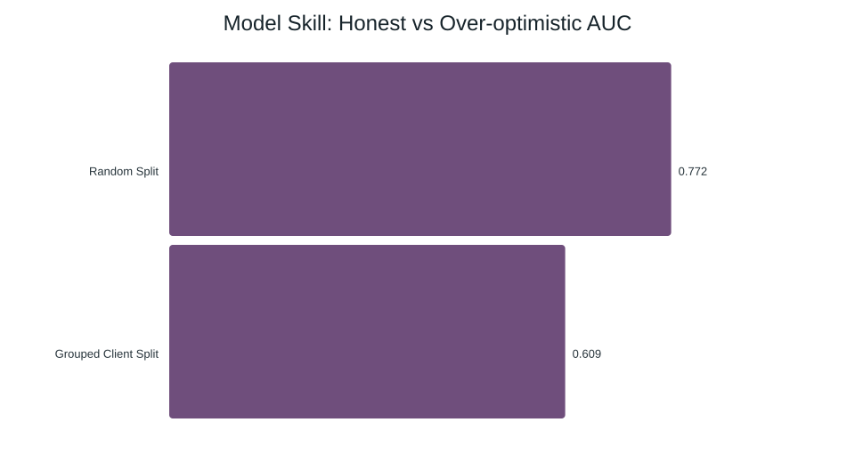

Research Question: Can we predict future organic traffic decline using trailing content metrics to prioritize manual content refreshes?
Content marketing teams currently rely on simple time-based rules (e.g., "refresh every 6 months"). This study aims to replace these static rules with a dynamic, data-driven ranking that identifies pages with high search presence that are showing signs of decay, ensuring limited editorial resources are applied where they have the most impact.
Dataset: FlyRank Internship Warehouse Release (Build v20260703).
Scale: ~79 million rows of daily performance records covering ~70 pseudonymized clients and ~520,000 content items.
Time Windows: The study utilized February 2026 as the feature aggregation window and March 2026 as the outcome evaluation window.
Exclusions: We excluded pages with fewer than 5 clicks in the baseline month to ensure stability in the percentage-based decline label. We also excluded new content created during the evaluation window to avoid new-content bias.
Model: Random Forest Classifier (100 estimators, depth 10).
Label Definition: A binary flag indicating March clicks were less than 80% of February clicks (>20% decline).
Baseline: A transparent rule-based score: (days_since_last_update >= 180) * impressions_90d.
Features: The model utilized log-transformed impressions, clicks, and sessions; average position; content age; word count; and categorical indicators for content type and search intent.
Validation Design: Grouped Client Split (20% holdout). By holding out entire sites, we prevent the model from memorizing site-specific technical characteristics that don't generalize to new domains.
The model demonstrates directional skill in identifying decay risk but highlights the critical importance of validation design.
| Validation Design | Metric | Baseline Score | Model Score | Lift |
|---|---|---|---|---|
| Random Split | ROC-AUC | 0.500 | 0.772 | +54% |
| Grouped Client Split | ROC-AUC | 0.500 | 0.609 | +22% |
| Precision @ Top 50 | Precision | 0.700 | 0.560 | -20% |

The 0.163 AUC gap between random and grouped splits reveals significant 'memorization' of client-specific signatures. Furthermore, while the model generalizes well across the whole dataset (higher AUC), the manual baseline remains more effective at identifying the most obvious high-volume refresh candidates (higher Precision@50).
We recommend a Prioritized Content Review Queue using the following criteria:
Protocol: Content teams should review the top 50 flagged items monthly. Automated updates should be avoided for high-value brand pages or legal content.
The complete analysis, including data aggregation and modeling notebooks, is available in the project repository. All experiments were conducted with a fixed random seed (42) to ensure reproducibility.
GitHub Repository: FEZEKIL/flyrank-ml-internship